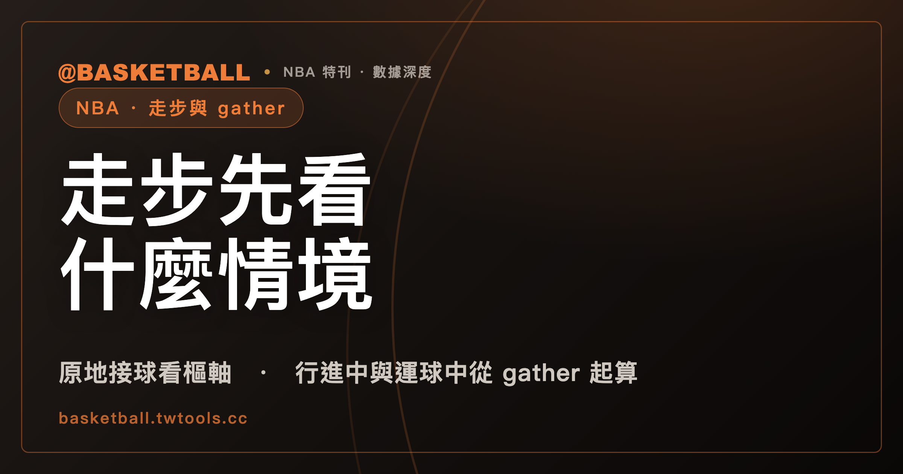

走步先看情境：原地接球、行進中與運球中，NBA 規則書各有一句條文
依 NBA 2025-26 規則書 Rule 10 §XIII，原地接球的球員由 §XIII(a) 的樞軸規則處理；行進中或運球中 gather 的球員，第一步從 gather 之後有腳觸地起算，能走幾步要看 gather 時的情境。只記「兩步」，會漏掉行進中且尚未運球的一步款，以及原地接球的樞軸款。

新手村｜規則入門・走步與 gather
「走步」是球迷的說法，NBA 規則書寫的是 traveling。看比賽時會聽到「兩步」的口訣，但規則書的條文不是一句無條件的「兩步」，而是先問球員拿到球時處在什麼情境：站著不動接球、邊跑邊接球，還是在運球中把球收住。
本文依據的是 NBA 2025-26 規則書（Official Playing Rules，本機保存的全文文字檔，取得日 2026 年 9 月 30 日），主要條文是 Rule 10 §XIII 與 Rule 4 §III。FIBA 部分依據 FIBA 2024 版（Official Basketball Rules，2024 年 10 月版；2026 版規則書於 2026 年 10 月 1 日生效），取得日同為 2026 年 9 月 30 日。規則書會隨賽季或修訂更新，之後以官方最新版為準。
本文的範圍是步數與樞軸腳（pivot foot）的條文，走步被吹之後的罰則、具體球員與具體回合都不在內。讀完之後，你可以自己判一個標明「假設」的情境：先分出是哪一種情境，再照對應的一款數步。
gather 是規則書定義的詞：對接球、撿球與運球中的球員各有寫法
NBA 2025-26 規則書 Rule 4 §III 給 gather 下了定義，而且分成兩種對象。
第一種，對「經傳球接球，或取得球權未定的球」的球員（Rule 4 §III(a)）：gather 是球員取得足夠控制，可以握住球、換手、傳球、投籃，或是把球抱貼在身體上的那個時點。
第二種，對「運球中控球」的球員（Rule 4 §III(b)）：gather 是下列任一情形發生的時點。
| 款次 | 條文的意思（意譯） |
|---|---|
| §III(b)(1) | 雙手放到球上，或讓球靜止，而且仍在控制球 |
| §III(b)(2) | 一隻手托到球下方，並讓球停住 |
| §III(b)(3) | 其他情形下取得足夠控制，可以握住、換手、傳球、投籃，或把球抱貼身體（用語與 §III(a) 相同） |
規則書在別處也用到同一個詞：Rule 4 §II(a)(8) 把「Otherwise gathers the ball」列為運球結束的情形之一，並註明參見 §III(b)；Rule 4 §XI 談投籃動作時，寫到切入或其他移動中的投籃，投籃動作從球員 gathers the ball 時開始。
gather 這個英文詞，本文保留原文，不另創中文譯名。
第一步從 gather 之後有腳觸地起算，第二步是另一腳或雙腳同時觸地
Rule 10 §XIII(b) 對「行進中 gather」與「運球中 gather」的球員，各寫了幾步可以走，同一款也定義了什麼叫第一步、第二步。
- 第一步（NBA 2025-26 Rule 10 §XIII(b)）：發生在球員 gather 之後，一腳或雙腳觸地的時候。
- 第二步（同款）：發生在第一步之後，另一腳觸地，或雙腳同時觸地的時候。
第一步的定義以 gather 之後的觸地為準（Rule 10 §XIII(b)）。這一款是針對行進中或運球中 gather 的球員；原地接球的球員，由下一節的 §XIII(a) 處理。
走步本身的定義在 Rule 4 §IX：持球時朝任何方向移動，超過「規定的限制」。這一條引用了 Rule 4 §VII 與 Rule 10 §XIII 兩處；在本文引用的規則書快照裡，Rule 4 §VII（Held Ball）未見步數限制款，步數的款次寫在 Rule 10 §XIII。
原地接球、行進中 gather、運球中 gather：三種情境，三句條文
下表把 Rule 10 §XIII 的三句條文並排。每一格都只放該款條文寫的內容。
| 情境（NBA 2025-26） | 條文寫的內容 | 出處 |
|---|---|---|
| 原地（standing still）接球 | 可以樞軸（pivot），任一腳都能當樞軸腳 | Rule 10 §XIII(a) |
| 行進中 gather | 可以走 (1) 兩步，用於停步、傳球或投籃；或 (2) 如果尚未運球，出手前走一步 | Rule 10 §XIII(b) |
| 運球中 gather | 可以走兩步，用於停步、傳球或投籃 | Rule 10 §XIII(b) |
從表可以看到，「兩步」這個數字在行進中 gather 與運球中 gather 兩款出現，而且都帶著用途：停步、傳球或投籃。行進中 gather 的那一款還多一個分岔：如果球員尚未運球，條文另外寫了「出手前一步」。原地接球那一款寫的是樞軸。
條文裡的「尚未運球」是這一分岔的條件。照這一款的結構讀，本文的讀法是：行進中 gather、且還沒開始運球的球員，條文給了兩種走法；已經在運球中 gather 的球員，條文只寫了兩步這一種。
第一步之後，樞軸腳怎麼決定？看第一步怎麼落地
Rule 10 §XIII(b) 接著寫了第一步之後的幾種落地情形。
第一步就停住，雙腳同時在地。 NBA 2025-26 Rule 10 §XIII(b) 寫：第一步就停住、雙腳都在地上或同時觸地的球員，可以任選一腳當樞軸。如果他雙腳起跳，任何一腳落地之前必須出手。
一腳先著地。 同一款寫：一腳先著地的球員，只能用那隻腳當樞軸。
第一步單腳起跳。 同一款寫：行進中的球員第一步單腳起跳，第二步可以雙腳同時落地。這種情形下，球員不得以任何一腳為樞軸；如果一腳或雙腳離地，球要在任一腳回到地面之前出手。
連續同腳觸地。 Rule 10 §XIII(h) 寫：結束運球或取得控球之後，不得連續以同一腳兩度觸地（條文括號寫 hop）。
樞軸本身的定義在 Rule 4 §VIII(a)：持球的球員以同一腳連續踏出一步以上，另一腳（樞軸腳）與地面保持接觸。
樞軸腳抬起之前，球要先離手；抬起之後，要先傳或投
樞軸腳決定之後，NBA 2025-26 規則書對接下來的動作還有兩句條文。
第一句是運球。Rule 10 §XIII(c) 寫：在原地接球，或合法停步之後開始運球，球必須在樞軸腳離地之前離手。Rule 4 §VIII(b) 對樞軸之後想運球的球員，也寫了同一個先後：球要先離手，樞軸腳才能離地。
第二句是傳投。Rule 10 §XIII(d) 寫：持球的球員抬起樞軸腳之後，樞軸腳回到地面之前，必須傳球或投籃。
Rule 10 §XIII(e) 還有一句跟倒地有關：持球倒地，或在停步時倒地的球員，不得藉由滑行取得優勢（原文 may not gain an advantage by sliding）。
NBA 與 FIBA 2024 逐項對照：各自的條文各寫各的
FIBA 2024 版的走步條文在 Article 25。下表逐項並排，每格各自標來源，表內只放各自條文有寫的內容；兩份規則書的條文是否等價，本文不下結論。
| 項目 | NBA 2025-26 規則書 | FIBA 2024 版 Official Basketball Rules |
|---|---|---|
| 走步的定義 | 持球時朝任何方向移動，超過規定的限制（Rule 4 §IX） | 持活球時，一腳或雙腳做出超過本條所訂限度的非法移動（Article 25.1.1） |
| 第一步的起點 | gather 之後有一腳或雙腳觸地（Rule 10 §XIII(b)） | 取得控球（gaining control of the ball）之後有一腳或雙腳觸地（Article 25.2.1 第二項） |
| 行進中接球的步數 | 行進中 gather 可走兩步，或尚未運球時出手前一步；運球中 gather 可走兩步（Rule 10 §XIII(b)） | 行進中接球，或完成運球後，為了停步、傳球或投籃可走兩步（Article 25.2.1 第二項） |
| 第二步 | 第一步之後，另一腳觸地或雙腳同時觸地（Rule 10 §XIII(b)） | 第一步之後，另一腳觸地或雙腳同時觸地（Article 25.2.1 第二項） |
| 第一步就停住且雙腳在地 | 可任選一腳當樞軸；雙腳起跳，任一腳落地前須出手（Rule 10 §XIII(b)） | 可任選一腳當樞軸；之後若雙腳跳起，球離手前任一腳不得回場（Article 25.2.1 第二項） |
| 一腳先著地 | 只能用那隻腳當樞軸（Rule 10 §XIII(b)） | 只能以該腳為樞軸腳（Article 25.2.1 第二項） |
| 第一步單腳起跳 | 第二步可雙腳同時落地，不得以任一腳為樞軸；離地的話球要在任一腳回地前出手（Rule 10 §XIII(b)） | 第二步可雙腳同時落地，不得以任一腳為樞軸（Article 25.2.1 第二項） |
| 雙腳離地、雙腳同時落地 | 本文引用的 NBA 規則書快照未見同句 | 一腳一抬起，另一腳即成樞軸腳（Article 25.2.1 第二項） |
| 站著接球（兩邊用語不同） | 原地（standing still）接球可用任一腳當樞軸（Rule 10 §XIII(a)） | 雙腳站在場上接球時，一腳一抬起，另一腳即成樞軸腳（Article 25.2.1 第一項） |
| 開始運球 | 球必須在樞軸腳離地前離手（Rule 10 §XIII(c)） | 樞軸腳不得在球離手前抬起（Article 25.2.1 第一項） |
| 連續觸地 | 結束運球或取得控球後，不得連續以同一腳兩度觸地（Rule 10 §XIII(h)） | 結束運球或取得控球後，不得連續以同一腳或雙腳觸場（Article 25.2.1 第二項） |
表裡有兩點值得留意，都只是條文措辭的差異，本文不據此下結論。第一，第一步的起點，NBA 條文寫 gather，FIBA 條文寫取得控球；在 FIBA 2024 版全文裡，gather 一詞只出現在附錄一段程序清單（「After gathering all information from the other referees…」）的一般用法，沒有像 NBA Rule 4 §III 那樣的定義條。第二，連續觸地的那一句，NBA 條文括號寫 hop、限定同一腳，FIBA 條文寫同一腳或雙腳。
滑行與倒地各自另陳述。NBA 2025-26 Rule 10 §XIII(e)：持球倒地或停步時倒地，不得藉由滑行取得優勢。FIBA 2024 Article 25.2.2，適用跌倒、躺或坐在場上的球員：持球跌倒並滑行是合法的；如果球員隨後翻滾或試圖站起而仍持球，即為違例。兩條各說各的，各標來源。
「歐洲步」與「零步」是球迷的慣稱，兩份規則書快照的全文都查不到
看球時會聽到「歐洲步」（Euro step）、「零步」（zero step）這類說法。在本文使用的 NBA 2025-26 規則書快照與 FIBA 2024 版快照全文中，都查不到這兩個詞（euro step、eurostep、zero step 等寫法皆為 0 筆）。它們是球迷與媒體的慣稱，不是規則書用語。
判斷一個動作的步數時，要回到前面幾節的條文：先看 gather 發生在什麼情境，再看第一步、第二步怎麼落地。慣稱的名字不能取代條文的款次。
練習：四個假設情境，自己判一次
以下都是假設情境，甲隊、乙隊與球員都是代稱，用 NBA 2025-26 規則書判斷。
情境一。 甲隊某球員跑動中接到傳球，還沒運過球。他取得足夠控制的那個時點是 gather；gather 之後右腳先觸地，再來左腳觸地，然後投籃出手。
判斷：他是行進中 gather（Rule 10 §XIII(b)）。右腳觸地是第一步，左腳觸地是第二步，兩步用於投籃，落在條文 (1) 的「兩步」之內。如果他改成右腳觸地之後就出手，因為尚未運球，也對得上條文 (2) 的「出手前一步」。如果第二步之後又多踏一步才出手，本文的讀法是：這超出了 §XIII(b) 寫的兩步，落在 Rule 4 §IX 所說「超過規定的限制」的範圍。
情境二。 乙隊某球員正在運球，雙手把球抱住讓它靜止，仍在控制球。之後左腳觸地、右腳觸地，然後傳球。
判斷：雙手放到球上並讓球靜止、仍控球，是 Rule 4 §III(b)(1) 寫的運球中 gather。之後的左腳是第一步、右腳是第二步，運球中 gather 的一款寫了兩步用於傳球，這個動作在兩步之內。
情境三。 甲隊某球員原地站著接到球。他選左腳當樞軸，右腳向前踏出，然後想開始運球。
判斷：原地接球，任一腳都可當樞軸腳（Rule 10 §XIII(a)）。想開始運球，球必須在樞軸腳離地之前離手（Rule 10 §XIII(c)）。如果他是先抬起左腳、球還在手上，之後就要在左腳回地前傳球或投籃（§XIII(d)）。
情境四。 乙隊某球員行進中接球，第一步單腳起跳，第二步雙腳同時落地。
判斷：Rule 10 §XIII(b) 寫，行進中球員第一步單腳起跳，第二步可以雙腳同時落地；此時不得以任一腳為樞軸，如果一腳或雙腳離地，球要在任一腳回到地面前出手。條文寫的是此時不得以任一腳為樞軸。
走步被吹之後、能不能挑戰，本站另有文章
走步屬於違例還是犯規，被吹之後的一般處理是什麼，本站的違例與犯規的差別，有一段講走步、二次運球與 24 秒。教練能不能挑戰走步的判決，本站的NBA 教練挑戰入門，寫到 NBA 2025-26 規則書把走步列在不能挑的例子裡。這兩個題目本文都不重講。
常見問題
NBA 2025-26 規則書的走步是不是「兩步」？
要看情境。依 NBA 2025-26 規則書 Rule 10 §XIII(b)，行進中 gather 的球員，可以走兩步用於停步、傳球或投籃，或是尚未運球時出手前走一步；運球中 gather 的球員，可以走兩步用於停步、傳球或投籃。原地接球的球員由 §XIII(a) 處理，寫的是任一腳都可以當樞軸腳。「兩步」不能脫離這些情境單獨使用。
第一步從哪裡開始算？
依 NBA 2025-26 規則書 Rule 10 §XIII(b)，行進中或運球中 gather 的球員，第一步發生在 gather 之後一腳或雙腳觸地的時候。原地接球的球員另依 §XIII(a) 的樞軸規則。FIBA 2024 版 Article 25.2.1 第二項的寫法不同：第一步發生在取得控球之後一腳或雙腳觸地的時候。
規則書有寫「歐洲步」或「零步」嗎？
本文使用的 NBA 2025-26 規則書快照與 FIBA 2024 版快照，全文都查不到這兩個詞。它們是球迷慣稱；判斷步數時，依據的是 NBA 2025-26 Rule 10 §XIII 或 FIBA 2024 Article 25 的條文。
NBA 與 FIBA 的步數規定一樣嗎？
本文把兩邊的條文逐項並列（NBA 2025-26 規則書 Rule 10 §XIII，FIBA 2024 版 Article 25），各自標來源；兩者是否等價，本文不下結論。例如 FIBA 2024 版寫了「雙腳離地、雙腳同時落地，一腳一抬起，另一腳即成樞軸腳」，本文引用的 NBA 規則書快照未見同句。FIBA 2026 版規則書於 2026 年 10 月 1 日生效，之後請以官方最新版為準。
資料來源
- NBA Official Playing Rules 2025-26：Rule 4 §II(a)(8)、§III、§VIII、§IX、§XI；Rule 10 §XIII(a)–(e)、(h)。本機保存的全文文字檔，取得日 2026 年 9 月 30 日，無可點擊網址。
- FIBA Official Basketball Rules 2024（2024 年 10 月版）：Article 25.1.1、25.1.2、25.2.1、25.2.2。2026 版規則書於 2026 年 10 月 1 日生效。本機保存的全文文字檔，取得日 2026 年 9 月 30 日，無可點擊網址。